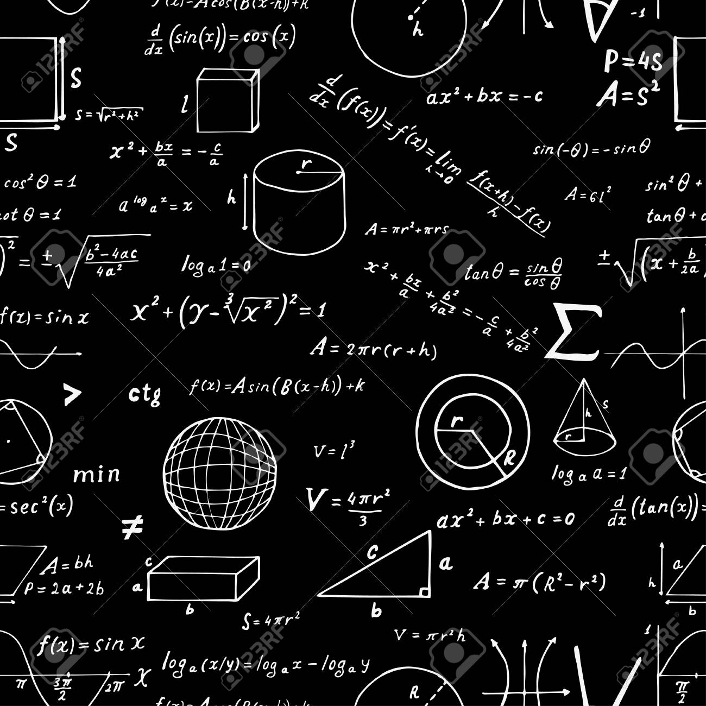

Welcome to J's studying page
Real analysis is the branch of mathematical analysis that studies the behavior of real numbers, sequences and series of real numbers, and real functions.
Some particular properties of real-valued sequences and functions that real analysis studies include convergence, limits, continuity, smoothness, differentiability and integrability.
Real analysis is distinguished from complex analysis, which deals with the study of complex numbers and their functions.
